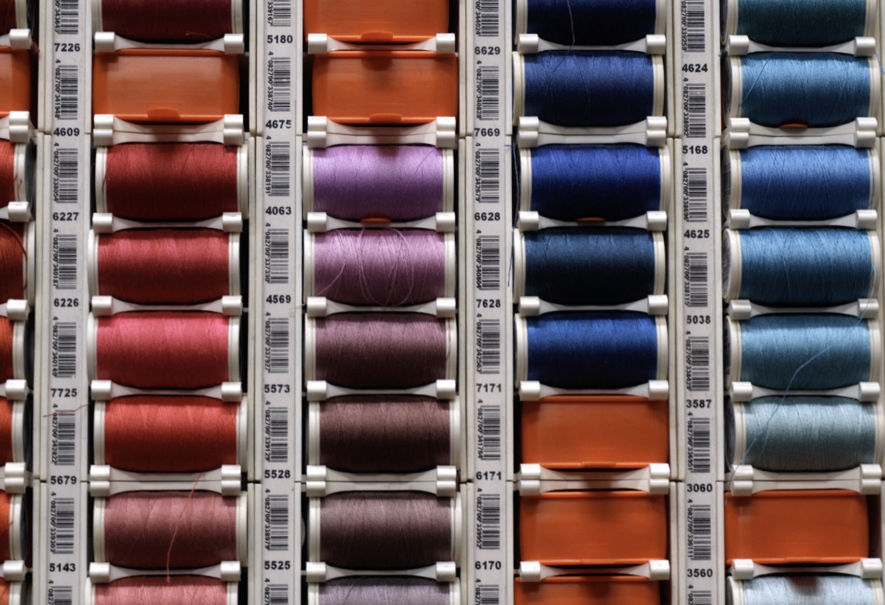
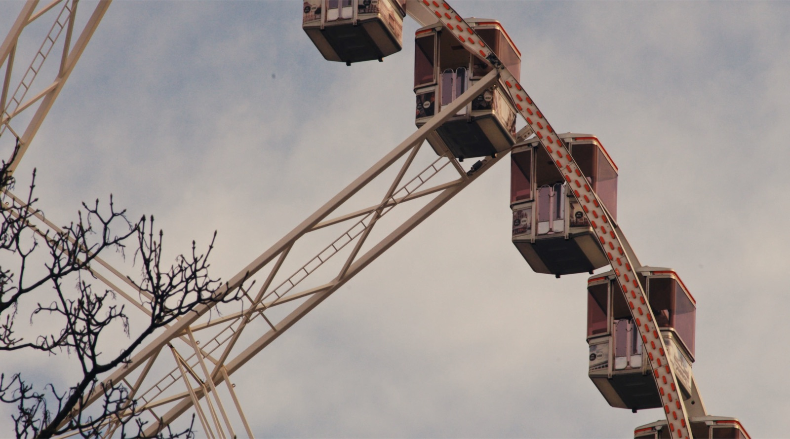
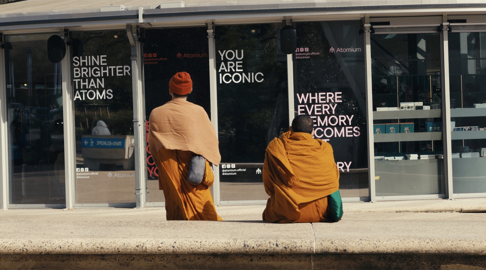
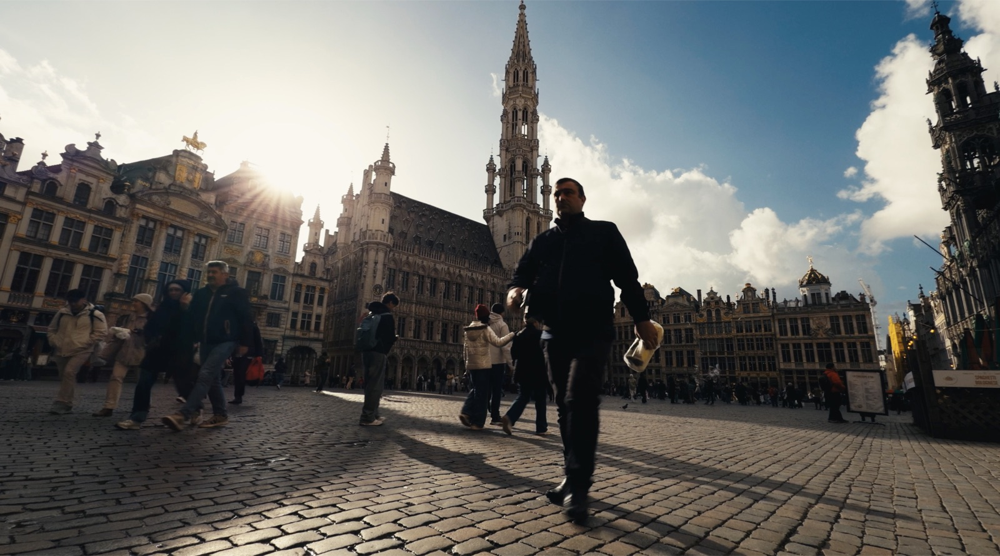

Dipartimento SX — reparto creativo audio/video a Roma: consulenza e direzione creativa, regia e video, musica e sound design, web development e studio fotografico
Lavori selezionati
Cosa facciamo
Consulenza e
Direzione
Creativa
Il nostro lavoro nasce da una fase conoscitiva con il cliente e si sviluppa con la creazione di un’intenzione comunicativa definita. Ci approcciamo con aziende, brand, istituzioni e professionisti in modo personale.





Componiamo musiche originali, effetti sonori, sound design per transizioni e prese audio dirette. Ogni parte del sonoro è studiata in correlazione al materiale video specifico, garantendo un approccio che arricchisce le immagini.
Musica,
Sound Design
& Foley
Web Development,
UX & UI
Ideiamo e sviluppiamo siti dal back al front end. Curiamo l’estetica, la user experience (UX) e l’interfaccia (UI), programmando direttamente in html, css e javascript, react, webGL.